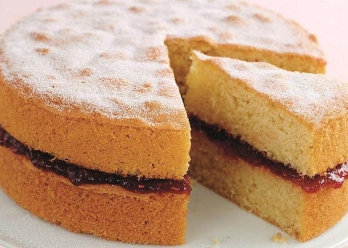

Những loại bánh ngọt nổi tiếng trên thế giới. Nếu là một tín đồ của bánh ngọt hay chỉ đơn giản là người ưa khám phá thì chắc chắn bạn sẽ không thể nào bỏ qua cơ hội khám phá và thưởng thức những chiếc bánh ngọt ngon nhất thế giới này…
Những loại bánh ngọt nổi tiếng trên thế giới. Nếu là một tín đồ của bánh ngọt hay chỉ đơn giản là người ưa khám phá thì chắc chắn bạn sẽ không thể nào bỏ qua cơ hội khám phá và thưởng thức những chiếc bánh ngọt ngon nhất thế giới này…
Những loại bánh ngọt nổi tiếng trên thế giới
Chesse Cake
Đây là loại bánh ngọt được làm chủ yếu từ phô mai, tạo vị béo ngậy. Phía trên người ta có thể phủ thêm mứt. Chiếc bánh pho mát kem được làm từ những năm 1800 và trở thành một trong những món bánh quen thuộc của người dân New York.
Tiramisu

Là loại bánh ngọt vô cùng quen thuộc tại Việt Nam nhưng không phải ai cũng biết rõ về chúng. Tiramisu là loại bánh ngọt tráng miệng vị cà phê rất nổi tiếng có nguồn gốc từ Italy. Bánh gồm các lớp bánh quy Savoiardi nhúng cà phê xen kẽ với hỗn hợp trứng, đường, phô mai mascarpone đánh bông, bột cacao. Món bánh này còn có một tên gọi khác, là “thiên đường ở trong miệng”, nhằm ca ngợi độ ngon của Tiramisu.
Black Forest

Đây là một kiểu bánh có nguồn gốc từ Đức với tên gốc là Schwarzwälder Kirschtorte. Nó bao gồm nhiều lớp bánh chocolate sponge, phủ váng sữa đánh tơi, maraschino cherry và chocolate bào mỏng.
Victoria Sponge

Đây là loại bánh được đặt theo tên của nữ hoàng Anh Victoria. Một chiếc Victoria Sponge truyền thống gồm mứt và lượng kem nhiều gấp đôi. Bánh thường được dùng trong tiệc trà chiều của người Anh.
Sachertorte

Đây là một loại bánh được tạo ra bởi chocolate tuyệt hảo nhất nước Áo. Bánh có vị ngọt dịu nhẹ, gồm nhiều lớp bánh được làm từ bánh mì và bánh sữa chocolate, xen lẫn giữa các lớp bánh là mứt mơ. Món bánh chocolate này nổi tiếng và thành phố Vienna đã ấn định tổ chức một ngày Sachertorte quốc gia, vào ngày 5/12 hàng năm.
Swedish Princess

Vẻ ngoài của Swedish Princess ngọt ngào như chính tên gọi của mình. Đây là món bánh ngọt truyền thống của Thụy Điển được rất nhiều người yêu thích. Ban đầu, bánh được làm để phục vụ hoàng gia, được làm từ mứt, trứng, sữa, kem và cốt bánh bông lan, bao phủ phía trên là lớp bánh hạnh nhân (thường có màu xanh). Vete-Katten, Thụy Điển là nơi tuyệt nhất để thưởng thức món bánh mang tên đài các này.
Lamington

Lamington là chiếc bánh mang theo cả niềm tự hào của người Australia. Bánh bao gồm lớp ruột tơi xốp, mềm mịn làm từ bột và trứng, được phủ chocolate bóng bẩy bên ngoài và rắc dừa xung quanh. Đây là món bánh được yêu thích trên khắp đất nước, thậm chí chính phủ Australia còn chọn ngày 21/7 là ngày bánh Lamington.
Madeleines

Đây là món ăn đơn giản, quen thuộc nhưng rất được yêu thích của người Pháp và thường được gọi với tên bánh con sò, được làm từ bột, đường, bơ và sữa. Người ta thường tôn vinh loại bánh này với tên gọi “nàng thơ trong các bữa tiệc trà của nước Pháp”.
Mochi

Là món ăn truyền thống trong ngày Tết được người Nhật yêu thích, món bánh này tượng trưng cho sự may mắn và thịnh vượng trong năm mới. Nhân bánh có thể được làm từ đậu đổ, đậu trắng hoặc dâu tây hay một số loại hoa quả khác kết hợp với đậu đỏ. Lớp vỏ bên ngoài mềm, dai là nét đặc trưng của bánh mochi, lớp bột gạo trắng muốt bên ngoài giúp chúng trở nên mịn màng và đẹp mắt hơn nhiều.
Dorayaki

Dorayaki nghe có vẻ khá lạ lẫm nhưng nếu nói Bánh rán thì đây lại là món bánh vô cùng quen thuộc với các fan truyện tranh tại Việt Nam. Món bánh rán này đã trở thành huyền thoại đối với các fan của chú mèo máy Doraemon trên toàn thế giới.
Bánh rán là loại bánh cổ truyền của Nhật Bản. Nó có hình dáng giống như bánh bao, bao gồm 2 lớp vỏ bánh tròn dẹt làm từ bột, phết mật ong, được nướng lên và bao lấy nhân thường làm từ bột nhão đậu đỏ. Ngày nay người ta có thể làm nhiều loại nhân (chocolate, chuối, đậu đen…) nhưng nhân đậu đỏ là loại nhân đặc trưng nhất. Một số nơi tại Nhật bản như ở vùng Kansai, Osaka hay Nara, loại bánh này thường được gọi là Mikasa.
Macaron

Đây là một loại bánh ngọt của Pháp, bánh được làm từ lòng trắng trứng, đường bột, đường cát, bột hạnh nhân và một ít phẩm màu tự nhiên. Nhân bánh thường là mứt, chocolate hoặc kem bơ kẹp ở giữa.Bánh macaron nổi bật với những hương vị truyền thống như mâm xôi, chocolate và những hương vị mới như nấm và trà xanh.
Pandan
Bánh Pandan còn có tên gọi khác là bánh bông lan lá dứa. Bánh có màu xanh tự nhiên đẹp mắt, mùi thơm của lá dứa và mềm mịn, tơi xốp nhưng cũng không quá ngọt. Đây là món bánh rất nổi tiếng ở Singapore, thường được nhiều du khách mua về làm quà.
Tapioca
Đây là một món ăn có mặt khắp phố phường của Brazil. Bánh được làm với lớp bột mì cán mỏng nướng giòn, khi ăn sẽ kẹp với kem, chuối, pho mát, chocolate. Khi cho một miếng Tapioca vào miệng, bạn sẽ cảm nhận được một hương vị rất lạ với phần nhân bánh rất mềm, vỏ bánh cùng vị chocolate dịu nhẹ.
Pavlova

Loại bánh này được đặt theo tên của vũ công ballet hàng đầu của nước Nga, Anna Pavlova. Món bánh được tạo ra để vinh danh cô khi Pavlova đi lưu diễn ở Australia và New Zealand trong những năm 1920. Loại bánh này được làm từ lòng trắng trứng đánh bông với đường, bên ngoài là lớp vỏ cứng nhưng xốp, bên trong là lớp kẹo dẻo. Bánh hay được ăn kèm với kem tươi đánh bông và hoa quả tươi, các loại quả dâu, kiwi…
Apple Pie
Bánh táo được xem là biểu tượng của nền văn hóa ẩm thực Mỹ, thể hiện sự thịnh vượng và là niềm tự hào trong suốt những năm của thế kỷ 19 và 20 của đất nước này. Bánh táo với phần vỏ bánh mỏng, giòn mềm, ẩn chứa phần nhân táo thơm ngọt, điểm chút vị chua dịu của trái cây quả sẽ là một lựa chọn hoàn hảo cho những tín đồ bánh ngọt trên toàn thế giới.
Gateau St. Honore
Món bánh ngọt tráng miệng nhẹ nhàng này được làm từ những chiếc bánh giống như bánh choux nhúng chocolate được phủ đầy kem tươi đánh và caramel. Gateau St. Honore được đặt theo tên một vị thánh nghề bánh và có xuất sứ từ Pháp nhưng bạn hãy thử loại bánh này ở Bỉ vì nó rất ngon.
Limburg Pie
Những chiếc bánh nhân trái cây đến từ miền Nam Hà Lan này có kết cấu mềm, đơn giản và thường làm từ hỗn hợp trứng, sữa và một ít bánh quy.“Vỏ bánh Limburg Pie không giòn. Nó hơi giống với bánh mì nhưng vẫn cho ta một hương vị rất cao cấp”.
Carac
Chiếc bánh carac của Thụy Sĩ đặc biệt hấp dẫn và sang trọng và là một mặt hàng nổi bật trên hầu hết các cửa hiệu bánh ngọt ở Thụy Sĩ. Vỏ của chiếc bánh tart nhỏ bé này được làm từ chocolate ganache đen, hạt hạnh nhân nghiền nhuyễn trong khi bề mặt của chiếc bánh được phủ một lớp đường đông lạnh màu xanh ngọc rất bắt mắt.
Loại bánh nào trong danh sách “Những loại bánh ngọt nổi tiếng trên thế giới” mà chúng tôi vừa nêu ở trên để lại ấn tượng tốt nhất với bạn?